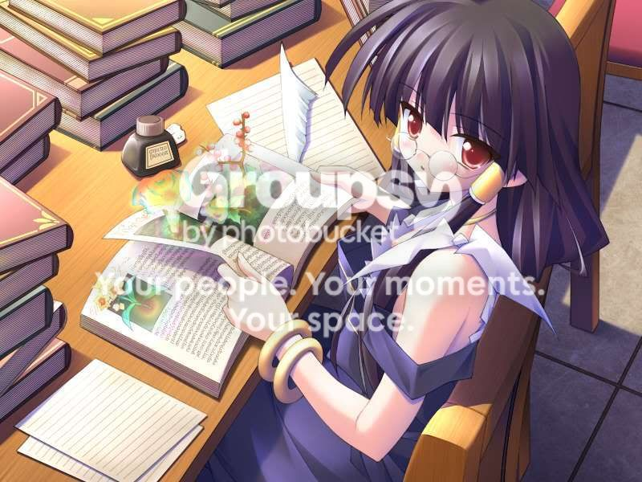

หน้า 3 จากทั้งหมด 9

โพสต์แล้ว:
ศุกร์ 20 มิ.ย. 2008 8:01 pmโดย ECO
เอาน่ะ มันก็ใช่ แต่มันคนละเรื่องกันนี่ หญิงรุกได้ชายรับดี 555 :lol:
โพสต์แล้ว:
ศุกร์ 20 มิ.ย. 2008 8:45 pmโดย ECO
NiJiGoGo เขียน:เรปบนได้บทอะไรหรือคะ? จะได้ให้ออกเร็วๆ
เอมิอ่าค่ะ ^^
โพสต์แล้ว:
ศุกร์ 20 มิ.ย. 2008 11:13 pmโดย ECO
อ๊าค งาน still เยอะ มากมาย ก่ายกอง... OTL
[/me นอนตาย]
เสิร์ชหา electronic ไทย.. เจอแต่โฆษณาขายเครื่องกองน้ำ (ฮา)
[/me แอบขุดแล้วเผ่นฟิ้ว]
โพสต์แล้ว:
เสาร์ 21 มิ.ย. 2008 4:13 amโดย ECO
เหอๆ นิจิ มีเรื่องจาบอก คือว่า.....
ยูริมานเปลี่ยนสีผมอีกแล้ว =w=
พอดีว่ากดผิดไปโดนยาย้อมผม พรึ่บเดียว หัวขาว
(ยาย้อมสีเงิน ช้านจาอาวมาห้ายพระ~ TT[]TT)
กำๆๆ อนาถจริงๆ ไม่กล้าเปลี่ยนกลับ ของแพง =w= (งก!!!)
โพสต์แล้ว:
เสาร์ 21 มิ.ย. 2008 6:48 amโดย ECO
งั้น สรุปจะให้เอาสีอะไรล่ะ !! เว่ เว้ เว เว๋ เว๊
โพสต์แล้ว:
อาทิตย์ 22 มิ.ย. 2008 5:00 pmโดย ECO
เผยยย !! เดคารัสไม่มีเพศ คือจิ้นกันได้ถ้วนหน้านั่นเอง แต่เอารูปมาด้วยแล้ว โคตะระโมเอะเลยอ่ะ เหอๆๆๆ

โพสต์แล้ว:
อาทิตย์ 22 มิ.ย. 2008 5:17 pmโดย ECO
แว๊กกก
น่าฮักหลายๆ
โพสต์แล้ว:
อาทิตย์ 22 มิ.ย. 2008 8:53 pmโดย ECO
น่ารักใช่มั้ยล่ะ 555 สังเกตว่าไม่มีหน้าอก จิ้นกันสบายเลยทีนี้
โพสต์แล้ว:
อาทิตย์ 22 มิ.ย. 2008 10:51 pmโดย ECO
โอ้
แอบสังเกตไปแล้วเจ้าค่ะ หึหึ
นุกถึงมาโอระในเรื่อง the gentle man alliance เลย
โพสต์แล้ว:
จันทร์ 23 มิ.ย. 2008 1:31 amโดย ECO
/me เหล่มองรูปบน ๆ พิจารณาลักษณะเพศ
สาวดุ้นก็ไม่น่าจะใช่ - -"
โพสต์แล้ว:
จันทร์ 23 มิ.ย. 2008 1:55 amโดย ECO
อ่า......
(me/เดินออกจากระทู้ไปอย่างอึ้งๆ)
//ไม่จริงใช่มะ...ตาฝาดๆๆๆ...ไม่ใช่..ไม่มีทาง...บอกสิว่าไม่จริ๊งงงงงงงงง!!!!//
(สติแตกไปแย้ว =w=")
โพสต์แล้ว:
อังคาร 24 มิ.ย. 2008 6:42 pmโดย ECO
กิ๊วก๊าวว 555 น่ารักใช่มั้ยล่ะ? เดคารัสไม่มีเพศจริงๆนะ ไว้ดูกัน ...
โพสต์แล้ว:
พุธ 25 มิ.ย. 2008 5:55 pmโดย ECO
สกิน Winampยังไม่ได้ลงชิมิ ไว้เดี๋ยวจะเอา Winamp ชมรมเกษตรมาฝากจร้า
โพสต์แล้ว:
อาทิตย์ 29 มิ.ย. 2008 1:01 amโดย ECO
จึ่กๆๆๆๆ บอกนี้เงียบๆจังแฮะ
อัพต่อไสๆน้าค้า ใกล้ลงแดงแว้ว
โพสต์แล้ว:
อาทิตย์ 29 มิ.ย. 2008 7:16 amโดย ECO
รอด้วยยยยย - ยย !! มาแล้นน บทที่2 เมื่อวานโดนพี่มาสั่งว่าให้ปั่นไวๆ + ได้ตัวละครใหม่มาอีกตัว โอ้เย
===========================================
บทที่2
อีกด้านหนึ่งของมิติ
เมื่อหลุดเข้ามาในห้วงมิติ คุณไม่สามารถที่จะเลือกได้ว่าจะไปยังที่แห่งหนใด แต่หากคุณมาโดยความตั้งใจคุณจะหลุดไปยังหลุมดำ หากคุณมาเมื่อยามผิดหวังคุณอาจหลุดไปที่ที่เป็นภาพลวงตา แต่เมื่อยามใดที่คุณหลุดเข้ามาอย่างไม่ได้ตั้งใจ หากคุณมาความปรารถนาในใจคุณจะไปยัง ‘Miracle on Miracle’
ทว่านี่เป็นเพียงความเชื่อของ ‘ลัทธิสิ่งมหัศจรรย์’
ในห้วงมิติกาลเวลา ...
เด็กหญิงผู้หนึ่งที่เข้ามาในห้วงมิติกาลเวลาอย่างไม่ได้ตั้งใจ หลับตาปี๋ทำท่าหวาดกลัวกับสิ่งที่เกิดขึ้นกับตนเอง เธอค่อยๆลืมตาขึ้นเมื่อรู้สึกว่าตัวเองเบาขึ้น <เอ๋ ?> เธอมองไปรอบๆ ที่มีแต่ประตูเต็มไปหมด อีกทั้งรอบกายยังเป็นสีทึบมืด
“เราอยู่ ... ที่ไหน” เธอพูดกับตน
ฉันบอกแล้วไง ว่าอย่าเข้ามา
เสียงประหลาดเดิมที่ดังขึ้นในป่าก่อนหน้านี้ดังขึ้นอีกครั้ง เธอสะดุ้งเล็กน้อยกับเสียง ก่อนที่จะแสดงสีหน้าเหมือนเดิม <ประตู ...>
ลอง ... เปิดดู ... สิ
เสียงประหลาดอีกเสียงชักชวนเธอให้ลองเปิดประตูดู แต่แล้วอีกเสียงก็แย้ง
อย่านะ อันตราย ... เธอควรอยู่ที่นี่ต่อไป ...อยู่กับความมืดมิดนี้ต่อไป
เด็กสาวยิ้ม พร้อมลุกขึ้นทำตามคำตอบในใจของตน “เราควรจะ ...” เด็กสาวยื่นมือไปที่ลูกบิดประตูบานหนึ่ง ที่มีลักษณะรูปร่างเป็นสีเหลี่ยมธรรมดา สีขาว มีหน้าต่างพอที่จะมองลอดเข้าไปได้
แกรก !!
เธอเปิดประตูเข้าไป เหงื่อเธอแตกเล็กน้อยที่ซึ่งมาจากอาการตื่นเต้นอย่างมาก เสียงใจก็เต้นดังจนได้ยิน หัวสมองมึนไปหมดเธอค่อยๆเปิดไป ทีละนิด ทีละนิด
แอ๊ ... ดด แอ๊ด ... กึก !!
เมื่อเปิดจนสุดเสียงสว่างก็พุ่งใส่ตาเธอ “อะ ... อะไรน่ะ !!” เธอเอามือบังตาและหรี่ตามองข้างหน้า แสงสว่างค่อยๆลดลง จนเห็นเป็นภาพสีเขียวอ่อนๆ กับสีฟ้าใส วิวข้างหน้าเป็นธรรมชาติอันงดงาม
ขาเธอค่อยๆขยับไปอย่างไม่ได้ตั้งใจ เหมือนเป็นแรงดึงดูด เธอพยายามลากขาให้อยู่กับที่ แต่ไม่ไหวเธอจึงเดินไปตามแรงของขาทั้งสองข้าง <โอยย ... ยย ไม่ไหวแล้ว>
จิ๊บ ... บบ
นกตัวหนึ่งบินมาเกาะไหล่ของเธอ “ว้าย น่าร้ากกก ... กก !!” เธอทำตาเป็นประกาย แต่แล้วลมอ่อนๆก็พัดมา ทำให้นกตัวนั้นบินหนีไป เธอทำหน้าผิดหวังเล็กน้อย <เอ๊ะ ... จำได้ว่าเราจะไปลงทะเบียนโรงเรียนนี่นา ... =_=;; ซวยแล้วไง> เธอเกาหัวตัวเองไปมา
“อึ๋ยยย !!! ทำไงดี๊ ~~ ...” ฟิ้ววววว ~ !!! ลมพัดพาหมวกสุดที่รักนาม ‘น้องเอ’ ของเธอไป ผมบ๊อบสีเงินของเธอ โดนลมพัดจนปิดหน้าปิดตา เธอปัดผมเผ้าให้ดูดีขึ้น และวิ่งตามหมวกสุดที่รักไป
“อ๊ะ !! น้องเอ !! ...” มิกะตะโกน
ตึก ตึก ตึก ...
เธอตามหมวกที่รักไป แต่ก็เหมือนยิ่งวิ่งตามยิ่งไกลขึ้นเท่านั้น เธอชักงงกับสถานการณ์พร้อมกับคิดถึงว่า
ในตอนแรกฉันทำอะไรอยู่
ทำไมฉันถึงมาที่นี่
ฉันมาที่นี่ได้อย่างไร
ทำไมฉันถึงไม่คว้าหมวกเอาไว้
<เอ๊ะ... แล้วทำไมล่ะ?> มิกะลองหยุดวิ่งตามหมวกดู ฟิ้ว...
พึ่บ ...
ลมพัดหมวกมาหยุดอยู่หน้าเธอ ขณะที่เธอกำลังจะก้มไปจับหมวกนั้น “ที่นี่คือเขากลับตาลปัตร แห่ง ‘Miracle on Miracle’ ...” เสียงเล็กที่ดูเหมือนของเด็กประถมเข้ามาในหูเธอ “เอ๊ะ ! หมายความว่าไงอ่ะ”
เธอเงยหน้าขึ้นตามเสียง ก็พบกับเด็กน้อยหน้าตาน่ารักบ๊องแบ๊วคนหนึ่งยืนอยู่ เด็กน้อยนั้นมีเรือนผมสีน้ำเงินใส และ นัยน์ตาเป็นประกายกลมโตราวกับรัตติกาล เด็กน้อยยิ้มอย่างเป็นมิตร
“ใกล้ ไกล ลง ขึ้น จม ลอย เข้า ออก” เด็กน้อยจับหมวกของเธอมา และปล่อยลงกับพื้น แต่ทว่ามันไม่ตกลงไปยังผืนหญ้าเขียวชอุ่มภายล่าง มันลอยยิ่งขึ้น ยิ่งขึ้น จนทำให้มิกะเข้าใจในความหมาย
“แต่ตอนที่ลมพัดมา ...” แต่เมื่อมิกะยังไม่ทันพูดจบ เด็กน้อยก็พูดตัดหน้า “งั้นแสดงว่าความเป็นจริงก็ต้องเป็น ‘ลมตะวันตก’ เนี่ยแหละนะ ^0^ !!” เด็กน้อยยิ้มร่าเริงและดึงแขนมิกะ “หลับตานะ ระวังด้วยล่ะ” เด็กน้อยกล่าวกับมิกะ “เอ๊ะ? ทำไมเหร ... อ ... อ”
<ดูเหมือนเราตัวเบาลง ความรู้สึกแปลกๆนี้คืออะไรกันนะ ...>
มิกะคิดกับตัวเอง เธอรู้สึกว่าเหมือนตัวเบาลงและเท้าไม่แตะกับพื้น “ลืมตาได้ !!” เสียงเด็กน้อยดังขึ้นอีกครั้งเธอจึงทำตามคำบอก
“อ๊ะ !! ที่นี่” เธอจึงรู้ว่าตนเองกลับมาที่ที่ไม่อยากมาเสียแล้ว นั่นก็คือ ‘ห้วงมิติ’ เดิมที่เธอเคยมาในตอนแรก เธอทำหน้าแหยงๆแล้วเคลื่อนตามามองที่เด็กน้อย “ธะ ... เธอ จะ ... จะทำอะไรอ่ะ”
“เอาเถอะน่า ตามเค้ามาละกัน ไม่งั้นได้หลุดไปที่ ‘Dark Fairy Forest’ แน่ๆ”
มิกะไม่เข้าใจในคำพูดของเด็กน้อยปริศนาผู้นี้ แต่ก็ตามๆไปอย่างช่วยไม่ได้ ในเมื่อเธอมายังสถานที่ที่เธอไม่รู้จักเลยสักนิด
เด็กน้อยยื่นมือไปที่ประตูบานหนึ่ง ก่อนที่จะหันมาเอ่ยกับมิกะอย่างร่าเริง
“ไป ‘Miracle on Miracle’ กันต่อนะ เค้าจะนำทางไปที่ปลอดภัยให้”
เธอพยักหน้ารับ และเดินตามเด็กน้อยไป
“วิ้ววว – วว !!...” เสียงผิวปากของใครบางคนดังขึ้น “งายๆ งายจ๊ะ อิโนะจัง เด็กหม่ายหรอ? หรอ?” สาวผิวแทนจับหูฟังข้างหนึ่งของเธอออก เธอพูดอย่างเด็กแนว พร้อมดีดนิ้วไปตามจังหวะเพลง เครื่องเล่นสีขาวในมือของเธอ “ก็ ‘เอริกะจัง’ นำทางให้เธอหน่อยแล้วกันนะ เค้าต้องไปหอผู้อำนวยการอีก ไม่งั้น ‘วาคุจัง’ กับ ‘ชิโระจัง’ ก็ดุเค้าน่ะจิ” เด็กน้อยทำเสียงเหมือนจะร้องไห้และใช้นิ้ววาดวงกลมบนอากาศ
มันเกิดเป็นหน้าจอขึ้นมา ในหน้าจอนั้นมีภาพของชายสองคนในห้องๆหนึ่ง
“เจ้า ‘อิโนะ’ !!! หายไปไหนของมันวะ !!” ชายผมดำตะคอกใส่ชายผมบลอนด์เงินอีกคน
“แล้วตะคอกผมทำไมครับ?” เขาใช้มือทั้งสองปิดหู “จะให้ไปถามใครเล่า !!” ชายผมดำตะคอกอีกรอบ จนชายผมบลอนด์ใช้ปีกเทวาขาวของตนปิดหน้าเอาไว้
“อะไรกันครับ ใช่ว่าผมจะไม่เบื่อกับความเป็น ‘เด็กประถม’ ของ ‘ท่านผู้อำนวยการ’ นะครับ”
“เออ ! แล้วเมื่อไหร่มันจะมาอีกล่ะ ห๊ะ !!” เขาใช้มือกุมหัวตัวเอง
ตัดไปทางด้านผู้ที่ถูกกล่าวถึง...
“แง !!!!!!!!!! วาคุจัง กะ ชิโระจัง โกรธเค้าจริงด้วย !!!!” เด็กน้อยร้องไห้จ้า จากการสนทนาของชายทั้งสอง เด็กคนนี้เป็นผู้อำนวยการของที่ไหนสักแห่ง และยังมีนามว่า ‘อิโนะ’ แต่อะไรที่ทำให้มิกะต้องตะลึงไปนาน สองนาน
<นั่น เวทย์มนต์ !! เด็กนี่ !! ผู้อำนวยการ !!> มิกะตะโกนในใจ <เด็กนี่ เด็กนี่ อ๊า ~ !!>
<เหมือนคุงินะจังเปี๊ยบเลย !!> (คุงินะจังเป็นใคร จะเอามาลงในตอนพิเศษนะจ๊ะ เป็นตัวที่แต่งขึ้นเองล้วนๆ แต่ถ้าไปเหมือนใครต้องขอโทษทีด้วย)
<โมเอ๊ ~ !! เออ งั้นเราตามเด็กนี่ไปจะดีกว่าไปโรงเรียนเนอะ หุหุหุ> มิกะเริ่มออกลายโอตาคุเรื่อยๆ เธอแตะไหล่เด็กน้อยเบาๆ “ไม่เป็นไรนะหนู” เธอหวังดีที่จะปลอบเด็กน้อย แต่เจตนาในใจอาจจะค่อนข้าง คิดไปทางโชตะสักเล็กน้อย
“อะ ... อื้อ เค้าไม่เป็นไร” อิโนะปาดน้ำตาออก “เค้าต้องไปแล้วนะ เอริกะจัง นำพาเธอไปหน่อยนะ”
“จ้าๆ” เอริกะดีดนิ้ว ร่างของเธอค่อยๆละลายลงเหมือนน้ำ มิกะตกใจกับสิ่งตรงหน้า หญิงผิวแทนนามเอริกะ ละลายหายไป หากแต่เธอกลับกลายร่างเป็นม้าสีขาวอยู่ข้างหลัง
“อะ เอ้า เอาล่ะ อะ ขึ้นมาสิ ขึ้นมาเลย ชั้นจาพาเธอไปที่ลานกว้างเองนะ นะนะ ~”
“อะเค อะวู้ ว้า กรั่กๆๆ” มิกะพยายามทำเลียนแบบแต่มันก็ไม่ได้เข้ากันเลย -*- เอริกะหัวเราะ มิกะทำหน้าไม่พอใจหน่อยนึงและขึ้นขี่หลังม้าสีขาวตัวนั้น
“เอาล่ะนะ นะ จะไปล่ะนะ นะ จับให้แน่นๆ .... สิล้า !!!!!!” ปีกของมาสยายออก และพุ่งตัวไปกลางอากาศอย่างเร็ว มิกะจับหมวกตนไว้แน่น และมืออีกข้างก็เกาะหลังม้าขาวอย่างเต็มแรง เธอเริ่มเปลี่ยนจากความตกใจ กลายเป็นความสนุก และเธอได้คิดว่าเป็นแบบนี้ต่อไป ก็คงจะดี
หากเธอมีชีวิตเอาตัวรอดกับสถานที่ประหลาดแห่งนี้ได้ ถึงจะไม่ได้ไปไหนอื่น เธออาจทำอนาคตให้ดียิ่งกว่าการเป็นผู้สืผม็เป็นได้
“เป็นไงบ้าง อีก14103กิโลก็จะถึงแล้วล่ะ” เอริกะกล่าวเรียบๆ มิกะทำหน้าเหยเก “เอ๋ ~ !!! ตั้ง14103กิโล บ้าน่า จะได้ญี่ปุ่นถึงยุโรปได้แล้วมั้ง !” มิกะตะโกนเสียงดัง
“เอ๋? เอ๋? ยุโรป? ที่ไหนน่ะ”
<คนคนนี้ไม่รู้จัก? ยุโรปเหรอ>
เอริกะเป็นเด็กที่มีเชื้อของญี่ปุ่น แต่เธอนั้นกลับมาเกิดที่โลกประหลาดแห่งนี้ สิ่งนี้เป็นความจริงที่มิกะคิด แต่เธอก็พลาดไปนิดเดียวเอริกะคือ ‘มนุษย์จำแลง’ ต่างหากล่ะ…
“เออ ช่างมันเหอะ เหอะ ! ถึงแล้วเนี่ย” เอริกะร่อนตัวลงไปเหยียบบนดาดฟ้าแห่งหนึ่ง “ขอบใจมากนะ” มิกะเอ่ย ม้าขาวค่อยสลายตัวไป เธอหายไปแล้ว ไม่เหลืออะไรเลย มิกะพยายามคิดในแง่ดีว่าเธอคงจะแว่บตัวไปมาได้ มิกะไม่ได้คิดอะไรมากนักจึงวิ่งลงบันไดทางดาดฟ้าไป
จนถึงชั้นล่างสุด ...
เธอมองออกไปก็ได้พบกับน้ำพุ และผู้คนมากมาย อีกทั้งยังมีร้านค้าเล็กๆของเหล่านักเรียนตั้งขายขนมต่างๆนานาอยู่ มิกะตาเป็นประกายในทันที ที่นี่งดงามมาก และดูเหมือนเป็นจุดกลางของสถานที่ในโลกประหลาดแห่งนี้ มิกะคิดซ้ำไปซ้ำมาจนคิดคำตอบของตัวเองได้ เธอไม่รีรอรีบวิ่งไปร้านกล้วยชุบช็อกโก้ของโปรด “พี่สาวแสนสวยขา ขอ3ไม้ค่ะ” มิกะพูดเสียงหวาน
“ได้เลยจ้ะ” หญิงสาวในชุดเมดยิ้มให้ <ว๊าวๆๆ น่ารักจัง> มิกะกรี๊ดกร๊าดในใจ
“แหม... อย่าชมกันอย่างนั้นสิจ๊ะ” หญิงสาวหัวเราะคิกคัก สิ่งที่เธอเอ่ยออกมาทำให้มิกะค้างไป 5 วิ เธอคนนั้นเข้าใจความในใจของมิกะได้อย่างไร “เอ้า นี่จ้ะ พี่แถมให้สองไม้นะ” มิกะรับมาอย่างงงๆ และเดินทื่อไปยังม้านั่ง
<ที่นี่มันอะไรกันนะ คนกลายร่าง เด็กบ๊องแบ๊วที่ใช้เวทย์มนต์ ผู้หญิงอ่านใจ จะมีอะไรอีกล่ะ>
...
...
แต่เธอก็ยังไม่รู้อะไร โลกประหลาดแห่งนี้ยังมีอะไรอีกมากมายที่เธอยังไม่รู้